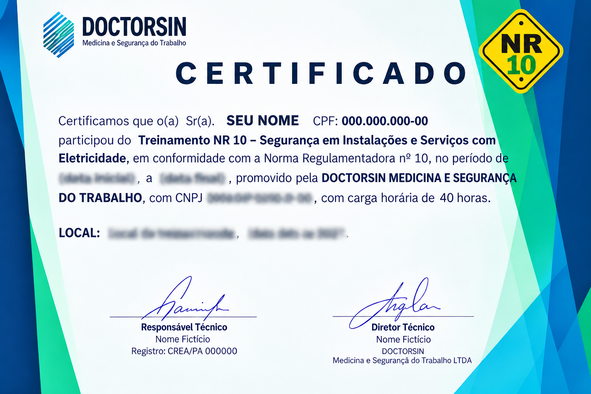

PÚBLICO-ALVO
Profissionais que atuam com eletricidade
Trabalhadores que interagem direta ou indiretamente com instalações elétricas e serviços com eletricidade, conforme suas atividades e responsabilidades.
Capacitação em segurança para profissionais que atuam com instalações e serviços com eletricidade, com foco na prevenção de acidentes, identificação de riscos e aplicação de medidas de controle.
Capacitação voltada à segurança dos profissionais que interagem com instalações e serviços com eletricidade, desenvolvendo conhecimentos sobre riscos elétricos, medidas de controle e procedimentos de prevenção de acidentes no ambiente de trabalho.
Trabalhadores que interagem direta ou indiretamente com instalações elétricas e serviços com eletricidade, conforme suas atividades e responsabilidades.
Desenvolver conhecimentos sobre os perigos da eletricidade, análise de riscos, medidas de proteção e procedimentos seguros durante as atividades profissionais.
Para atividades no Sistema Elétrico de Potência (SEP) ou em suas proximidades, o curso complementar possui carga horária mínima de 40 horas, além do curso básico.
A organização da capacitação considera os requisitos normativos aplicáveis, as características das atividades e a realização das etapas práticas necessárias.
Conheça os principais temas abordados na capacitação NR10 e desenvolva conhecimentos essenciais para trabalhar com segurança em instalações e serviços com eletricidade.
Identificação dos perigos relacionados à eletricidade e compreensão dos efeitos da exposição ao risco elétrico.
Aplicação de medidas preventivas para controlar os riscos elétricos durante intervenções e atividades profissionais.
Conhecimento dos equipamentos e sistemas utilizados para proteger os trabalhadores contra os perigos da eletricidade.
Orientações para a execução segura das atividades, seguindo procedimentos e requisitos de segurança aplicáveis.
Preparação para reconhecer situações de emergência e compreender as medidas iniciais de resposta a acidentes de origem elétrica.
A capacitação NR10 considera os requisitos legais e técnicos relacionados à segurança em instalações e serviços com eletricidade, observando as normas regulamentadoras e referências técnicas aplicáveis.
Estabelece os requisitos e condições mínimas para implementar medidas de controle e sistemas preventivos, garantindo a segurança e a saúde dos trabalhadores que interagem com instalações e serviços em eletricidade.
Apresenta disposições gerais sobre segurança e saúde no trabalho, incluindo o gerenciamento de riscos ocupacionais e requisitos relacionados à capacitação dos trabalhadores.
Estabelece os requisitos para seleção, fornecimento, uso, conservação e responsabilidades relacionadas aos equipamentos de proteção individual utilizados pelos trabalhadores.
Referências técnicas como a ABNT NBR 5410, para instalações elétricas de baixa tensão, e a ABNT NBR 14039, para instalações elétricas de média tensão, conforme sua aplicabilidade.
As Normas Regulamentadoras e normas técnicas podem ser atualizadas por atos posteriores. A SHAMMAR considera as referências legais e técnicas aplicáveis no planejamento de seus treinamentos.
Após cumprir as etapas previstas no treinamento e atender aos critérios de avaliação, o participante recebe o certificado correspondente à capacitação realizada em Segurança em Instalações e Serviços com Eletricidade.
O certificado documenta a conclusão do treinamento NR10 e reúne as informações necessárias para identificar a capacitação realizada pelo trabalhador.
A emissão do certificado ocorre após o cumprimento das etapas e dos requisitos previstos para a capacitação. Os dados registrados devem corresponder ao treinamento efetivamente realizado.

Modelo ilustrativo do certificado NR10